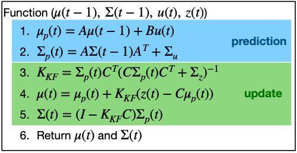
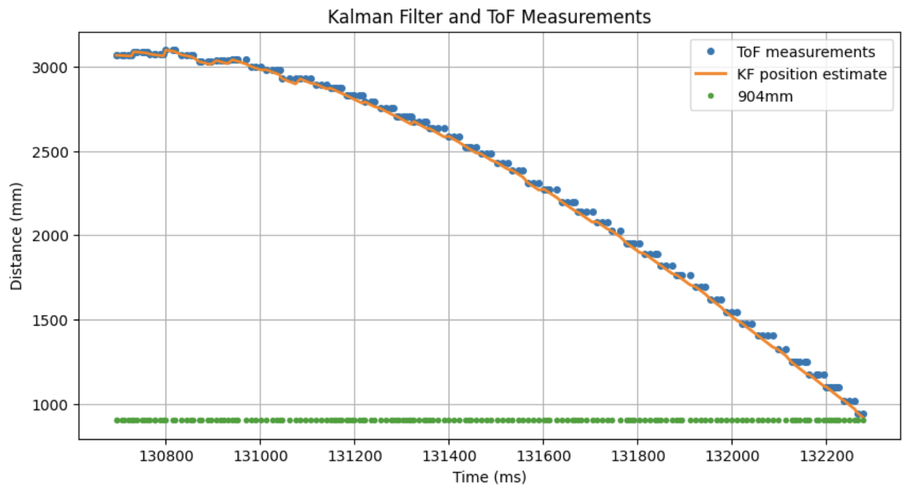

- Kalman Filter implementation to have car drift a set distance from wall.
- React quickly enough to prevent car from hitting wall
Objectives
Lab 8 Sections
- Introduction
- Original Drift Tries
- Proper Drift
- Blooper
Introduction
In this lab, the same Kalman Filter that was developed in Lab7 was used to have the car drift.
The KF works in two steps: Prediction and Update. When ToF data are not ready, the car uses only the prediction step of the KF to predict the distance from the wall.

Original Drift Tries
NOTE: because the code snippets were big, I removed sections with variables, other initializations and lines for data sending to jupyter, and replaced them with '[...]'
I also added coloring scripts for the codeblocks to make them more legible. Please read the colored comments in the code.
Also, I included Greek music in my videos on purpose, enjoy!
I also added coloring scripts for the codeblocks to make them more legible. Please read the colored comments in the code.
Also, I included Greek music in my videos on purpose, enjoy!
As per usual, I made a new command for the Artemis titled DRIFT_STUNT, which is very similar to the one for the KF implementation in terms of initialization, but it then calls KFtoWall(PWM).
case DRIFT_STUNT:
[...]
distanceSensor0.setDistanceModeLong();
distanceSensor0.setTimingBudgetInMs(33);
distanceSensor0.setIntermeasurementPeriod(35);
kf_initialized = false;
PID_wall_active = !PID_wall_active;
if(PID_wall_active == true){distanceSensor0.startRanging();
driftQ = true;
while(!distanceSensor0.checkForDataReady()){}
ToF_measurement = distanceSensor0.getDistance();
curr_pos = ToF_measurement;
kf_mu(0,0) = curr_pos;
kf_mu(1,0) = 0;
} // KF initialization complete
[...]
distanceSensor0.clearInterrupt();
[...]
KFtoWall(PWM);
break;
KFtoWall(PWM) uses the Error just to know when to drift, at which point driftCar() is called. The PWM is constant. The code is the following:
void KFtoWall(int driftPWM){
while(driftQ == true) {
PID_time = millis();
kalmanPredict((float)driftPWM, (float)(PID_time-PID_prev_time));
if(distanceSensor0.checkForDataReady()){
ToF_measurement = distanceSensor0.getDistance();
kalmanUpdate(ToF_measurement);
distanceSensor0.clearInterrupt();}
[...]
kf_pos = kf_mu(0,0);
[...]
error_p = kf_pos - goal_pos;
if(error_p > 15 ){
//I give it a "slack" of 15 for the error because our sensor is imperfect
moveCar(driftPWM);
}
else{
//If the error is less than 15, the robot understands it needs to drift
if(driftQ == false){
stopCar(driftPWM);}
if(driftQ == true){
driftQ = false;
analogWrite(BACKWARD_RIGHT,0); //non-active breaking
analogWrite(BACKWARD_LEFT,0);
analogWrite(FORWARD_LEFT,0);
analogWrite(FORWARD_RIGHT,0);
[...]
driftCar(179.0); // the car will be looking opposite to the wall
moveCar(driftPWM);delay(DELAY_MS);stopFast();
PID_wall_active=false;stopFast();error_i = 0; kf_initialized = false;
[...]
}
}
[...]
}
}
driftCar() is pretty much an implementation of rotational PID with the target angle being 179.0:
void driftCar(float drift_angle){ // will run until drift is successful
bool done=false;
error_i_rot = 0;
while(done==false){
PID_time_rot = millis();
dmp_yaw = getDMPyaw();
curr_angle=dmp_yaw;
error_p_rot = curr_angle - drift_angle;
reciprocal_angle = drift_angle - (drift_angle < 0 ? -1 : 1) * 180;
if (abs(error_p_rot) > 180.0)
{error_p_rot += (reciprocal_angle - curr_angle) / abs(reciprocal_angle - curr_angle) * 360.0;}
error_i_rot += error_p_rot*(PID_time_rot-PID_prev_time_rot)/1000;
if(error_i_rot>35){error_i_rot=35;}
else if(error_i_rot<-35){error_i_rot=-35;}
if(error_p_rot > 3 || error_p_rot < -3 ){
// accepted "error" to consider we have reached angle: (-3,3)
PWM_rot = Kp_rot * error_p_rot + Ki_rot * error_i_rot;
if(PWM_rot>0){PWM_rot+=155;}
else if(PWM_rot< 0){PWM_rot-=155;}
// added min value for PWM so that it moves
PWM_rot = constrain(PWM_rot, -255, 255);
rotateCar(PWM_rot);
}
else{
stopCarRotation();
done=true;
}
[...]
}
}
The following videos show two tries to drift with this code with different PWM values and
Kp_rot=0.0425|Ki_rot=0.1:
driftCar() function, so that it doesn't rotate so much before aligning and returning to me.
Proper Drift
The first thing I changed, were the P and I gains. I tuned them to: Kp_rot=0.02425|Ki_rot=0.015
The logic behind it, was that I didn't want the original error to be so large that it makes the car overshoot the goal so much, but I wanted it large enough that it would manage to overshoot by enough, so that it would be able to quickly go back to goal angle from 'overshot position'.
I also changed the following line of driftCar()
if(error_p_rot > 3 || error_p_rot < -3 )
if(error_p_rot > 8 || error_p_rot < -8 )
In short, I just increased the laxity of what is considered "successful reaching of goal", from 3 to 8

Blooper
The following video is a blooper of my car drifting into the wall:
Discussion
Lab 8 successfully employed a Kalman Filter for the car.
Collaboration
I used claude to add the capability of having colored letters in the code blocks and I referred to Aidan Derocher's and Lucca Correia's (very funny) websites for structuring this lab report.